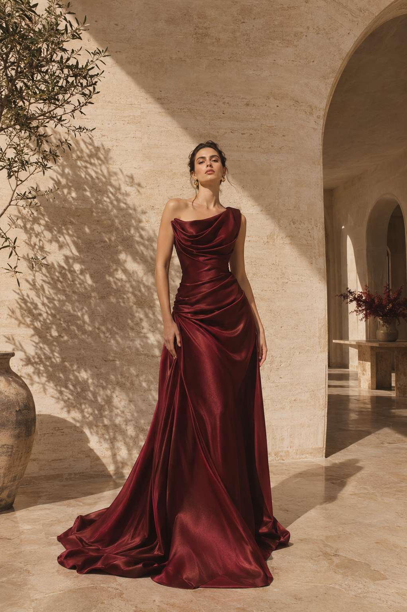
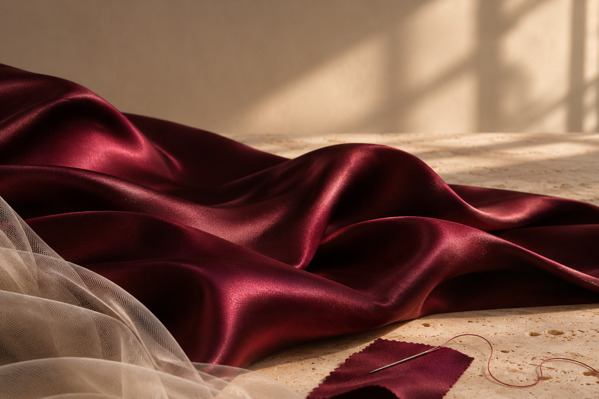

Room to
be yourself.
Soft romance or a little drama. An understated entrance or all eyes on you. Your sense of occasion is yours to define.
INDIVIDUALITY, ALWAYS.A NOTE ON WHO WE ARE
For the feeling.
For the entrance.
For the moment that is entirely yours.

That quiet, unmistakable moment
when a dress feels like you.
A glance in the mirror. A change in the way you stand. The anticipation of a night you’ll remember. We believe the most beautiful thing about a dress is how it makes you feel.
Missvella is an invitation to embrace that feeling. To find your own expression of elegance, and to make a little more room for the extraordinary.
We’re here for the way you make it your own.
Less about following a script.
More about feeling entirely yourself.
Soft romance or a little drama. An understated entrance or all eyes on you. Your sense of occasion is yours to define.
INDIVIDUALITY, ALWAYS.The way light catches a fold. The line of a neckline. A silhouette in motion. It’s the little things that make a look feel special.
EVERY DETAIL, A FEELING.A celebration. A long-awaited evening. A reason all your own. The best part of getting dressed is what happens next.
LET THE NIGHT BEGIN.
We love the conversation between structure and softness. Between a simple silhouette and an unexpected detail. Between how a dress looks, and how you bring it to life.
THOUGHTFUL BY NATURE. EXPRESSIVE BY DESIGN.SOME MOMENTS ASK FOR SOMETHING SPECIAL.
Find the dress.
Make the memory.
We’ll meet you at the beginning.